2023
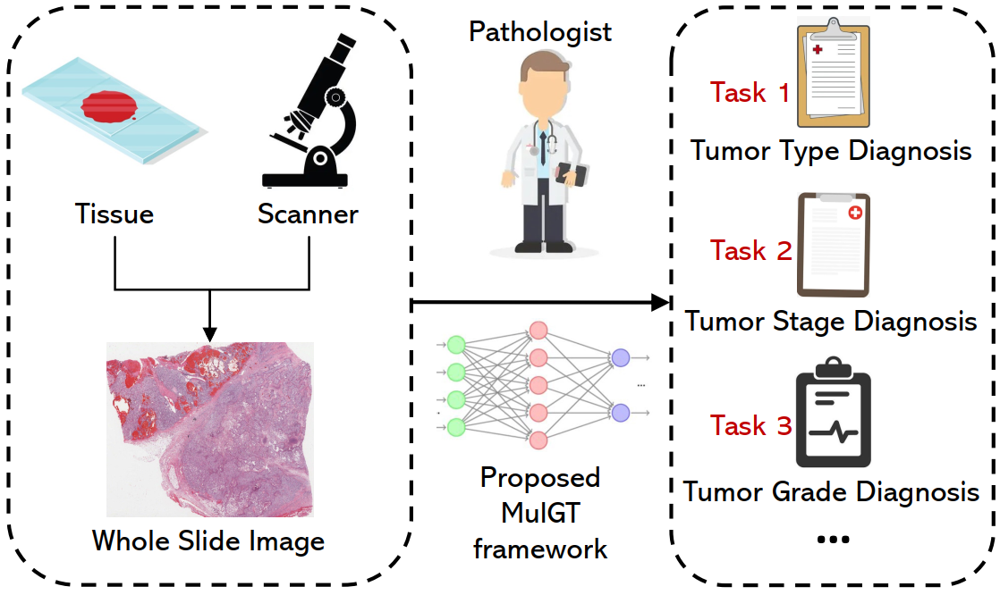
MulGT: Multi-task Graph-Transformer with Task-aware Knowledge Injection and Domain Knowledge-driven Pooling for Whole Slide Image Analysis
Weiqin Zhao, Shujun Wang, Maximus Yeung, Tianye Niu, Lequan Yu.
AAAI Conference on Artificial Intelligence (AAAI), 2023.
2022
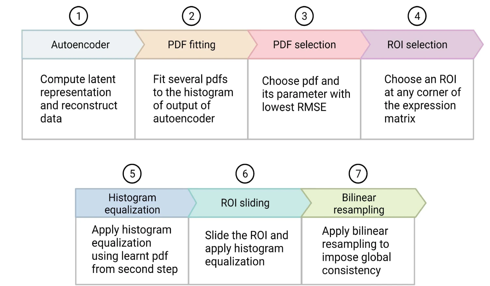
Leveraging data-driven self-consistency for high-fidelity gene expression recovery
Md Tauhidul Islam, Jen-Yeu Wang, Hongyi Ren, Xiaomeng Li, Masoud Badiei Khuzani, Shengtian Sang, Lequan Yu, Liyue Shen, Wei Zhao, Lei Xing.
Nature Communications, 2022.
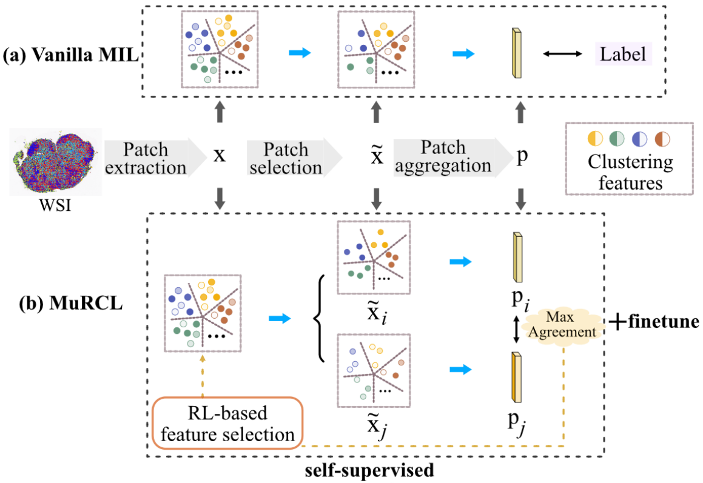
MuRCL: Multi-instance Reinforcement Contrastive Learning for Whole Slide Image Classification
Zhonghang Zhu, Lequan Yu, Wei Wu, Rongshan Yu, Defu Zhang, Liansheng Wang.
IEEE Transactions on Medical Imaging (TMI), 2022.
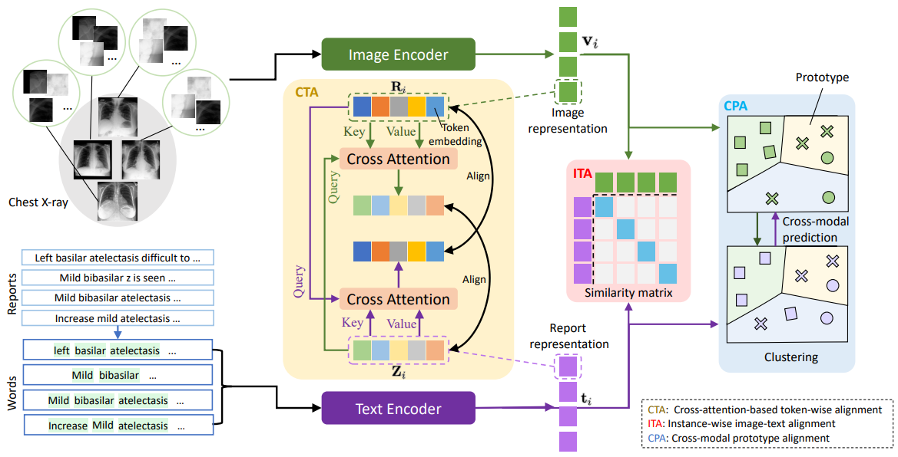
Multi-Granularity Cross-modal Alignment for Generalized Medical Visual Representation Learning
Fuying Wang, Yuyin Zhou, Shujun Wang, Varut Vardhanabhuti, Lequan Yu.
Conference on Neural Information Processing Systems (NeurIPS), 2022.
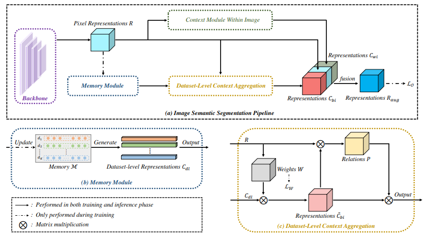
MCIBI++: Soft Mining Contextual Information Beyond Image for Semantic Segmentation
Zhenchao Jin, Dongdong Yu, Zehuan Yuan, Lequan Yu.
IEEE Transactions on Pattern Analysis and Machine Intelligence (TPAMI), 2022.
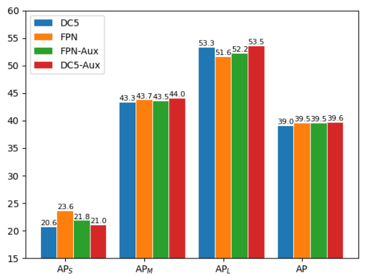
You Should Look at All Objects
Zhenchao Jin, Dongdong Yu, Luchuan Song, Zehuan Yuan, Lequan Yu.
European Conference on Computer Vision (ECCV), 2022.
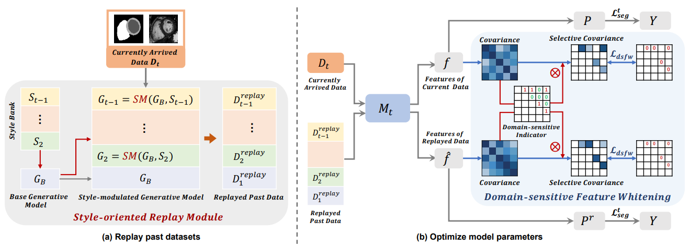
Domain-incremental Cardiac Image Segmentation with Style-oriented Replay and Domain-sensitive Feature Whitening
Kang Li, Lequan Yu, Pheng-Ann Heng.
IEEE Transactions on Medical Imaging (TMI), 2022.
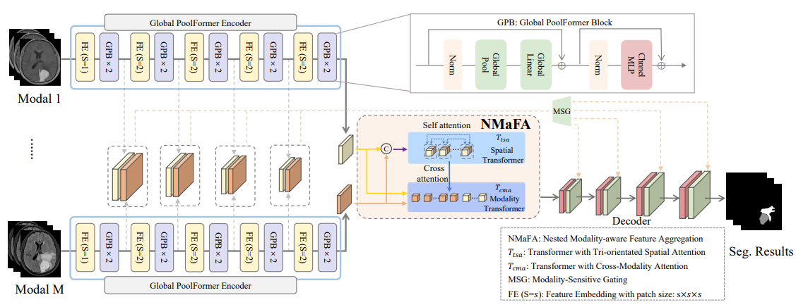
NestedFormer: Nested Modality-Aware Transformer for Brain Tumor Segmentation
Zhaohu Xing, Lequan Yu, Liang Wan, Tong Han, Lei Zhu.
Medical Image Computing and Computer Assisted Intervention (MICCAI), 2022.

Joint Prediction of Meningioma Grade and Brain Invasion via Task-Aware Contrastive Learning
Tianling Liu, Wennan Liu, Lequan Yu, Liang Wan, Tong Han, Lei Zhu.
Medical Image Computing and Computer Assisted Intervention (MICCAI), 2022.

Spatial-hierarchical Graph Neural Network with Dynamic Structure Learning for Histological Image Classification
Wentai Hou, Helong Huang, Qiong Peng, Rongshan Yu, Lequan Yu, Liansheng Wang.
Medical Image Computing and Computer Assisted Intervention (MICCAI), 2022.

Reinforcement Learning Driven Intra-modal and Inter-modal Representation Learning for 3D Medical Image Classification
Zhonghang Zhu, Liansheng Wang, Baptiste Magnier, Lei Zhu, Defu Zhang, Lequan Yu.
Medical Image Computing and Computer Assisted Intervention (MICCAI), 2022.
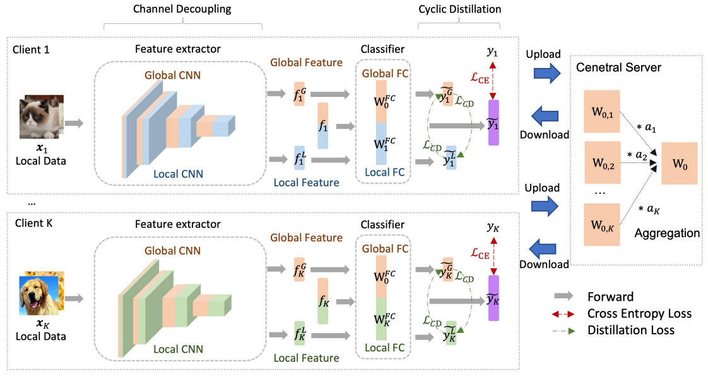
CD²-pFed: Cyclic Distillation-guided Channel Decoupling for Model Personalization in Federated Learning
Yiqing Shen, Yuyin Zhou, Lequan Yu.
IEEE Conference on Computer Vision and Pattern Recognition (CVPR), 2022.
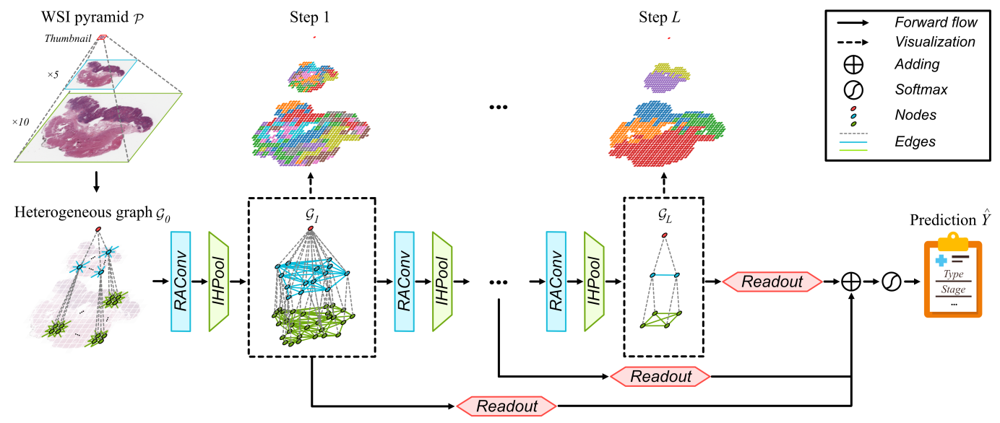
H²-MIL: Exploring Hierarchical Representation with Heterogeneous Multiple Instance Learning for Whole Slide Image Analysis
Wentai Hou, Lequan Yu, Chengxuan Lin, Helong Huang, Rongshan Yu, Jing Qin, Liansheng Wang.
AAAI Conference on Artificial Intelligence (AAAI), 2022.

Lymph Node Metastasis Prediction from Whole Slide Images with Transformer-guided Multi-instance Learning and Knowledge Transfer
Zhihua Wang, Lequan Yu, Xin Ding, Xuehong Liao, Liansheng Wang.
IEEE Transactions on Medical Imaging (TMI), 2022.

Novel-view X-ray Projection Synthesis through Geometry-integrated Deep Learning
Liyue Shen, Lequan Yu, Wei Zhao, John Pauly, Lei Xing.
Medical Image Analysis (MedIA), 2022.

Towards Reliable Cardiac Image Segmentation: Assessing Image-level and Pixel-level Segmentation Quality via Self-reflective References
Kang Li, Lequan Yu, Pheng-Ann Heng.
Medical Image Analysis (MedIA), 2022.

Robust Medical Image Classification from Noisy Labeled Data with Global and Local Representation Guided Co-training
Cheng Xue, Lequan Yu, Pengfei Chen, Qi Dou, Pheng-Ann Heng.
IEEE Transactions on Medical Imaging (TMI), 2022.
2021

Metal Artifact Reduction in 2D CT Images with Self-supervised Cross-domain Learning
Lequan Yu, Zhicheng Zhang, Xiaomeng Li, Hongyi Ren, Wei Zhao, Lei Xing.
Physics in Medicine & Biology (PMB), 2021.
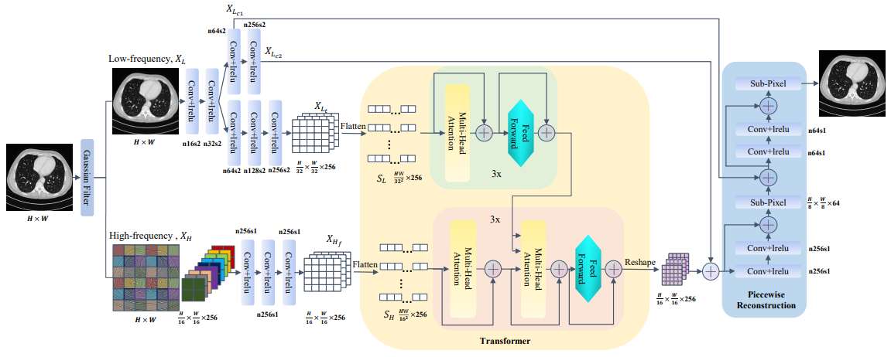
TransCT: Dual-path Transformer for Low Dose Computed Tomography
Zhicheng Zhang, Lequan Yu, Xiaokun Liang, Wei Zhao, Lei Xing.
Medical Image Computing and Computer Assisted Intervention (MICCAI), 2021.

Selective Learning from External Data for CT Image Segmentation
Youyi Song, Lequan Yu, Baiying Lei, Kup-Sze Choi, Jing Qin.
Medical Image Computing and Computer Assisted Intervention (MICCAI), 2021.

Deep Neural Network with Consistency Regularization of Multi-Output Channels for Improved Tumor Detection and Delineation
Hyunseok Seo, Lequan Yu, Hongyi Ren, Xiaomeng Li, Liyue Shen, Lei Xing.
IEEE Transactions on Medical Imaging (TMI), 2021.

Rotation-oriented Collaborative Self-supervised Learning for Retinal Disease Diagnosis
Xiaomeng Li, Xiaowei Hu, Xiaojuan Qi, Lequan Yu, Wei Zhao, Pheng-Ann Heng, Lei Xing.
IEEE Transactions on Medical Imaging (TMI), 2021.

MR to ultrasound image registration with segmentation-based learning for HDR prostate brachytherapy
Yizheng Chen, Lei Xing, Lequan Yu, Wu Liu, Benjamin P Fahimian, Thomas Niedermayr, Hilary Bagshaw, Mark K Buyyounouski, Bin Han.
Medical Physics, 2021.

Modularized Data-Driven Reconstruction Framework for Non-ideal Focal Spot Effect Elimination in Computed Tomography
Zhicheng Zhang, Lequan Yu, Wei Zhao, Lei Xing.
Medical Physics, 2021.